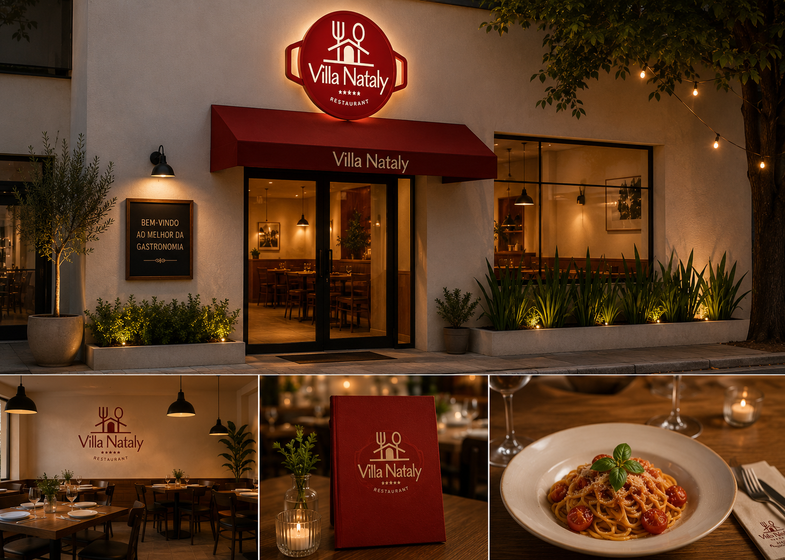

Villa Nataly - Site de Restaurante
Projeto web desenvolvido para simular a presença digital de um restaurante. O site possui página inicial, cardápio organizado por categorias, imagens dos pratos, tabelas de informações e página de pedido.
- HTML
- CSS
- Tabelas
- Formulário
- Links internos